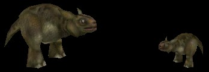

Cow
 Nali Cow on the left, with a baby on the right. |
This is your basic harmless animal. Pretty much all it does in a map is walk around, graze, and look cute. However, that's usually enough for SinglePlayer mappers to use them in their maps. They're particularly effective for atmosphere when you put them somewhere inside a Nali village.
Properties
- bHasBaby
- If bHasBaby is True, then this Cow will enter the game accompanied by a baby cow. For this reason, mappers are encouraged not to put BabyCows directly into their maps.
- bStayClose, WanderRadius
- If bStayClose is True, then the Cow will not wander too far away from where it originally started. Specifically, it won't wander farther from its starting point than the number of Unreal Units specified in the WanderRadius variable.